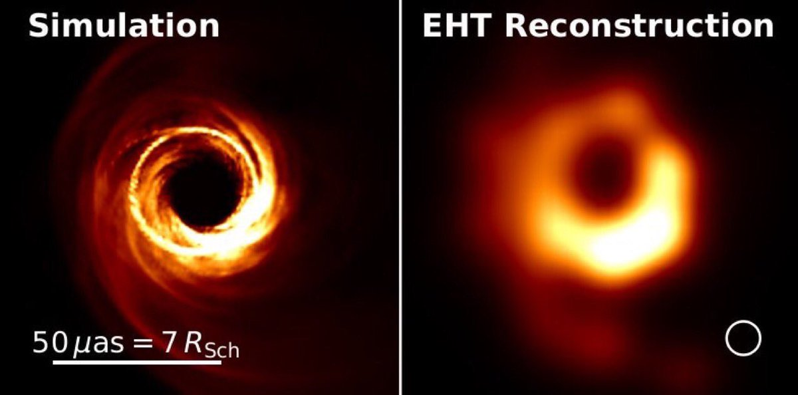

Características
"A comunidade científica acredita que os buracos negros apresentem dimensões bastante variadas: os menores deles podem apresentar até mesmo o tamanho de um único átomo. Os maiores, por sua vez, podem ter raios de poucos quilômetros e milhões de vezes a massa do Sol. Algumas observações astronômicas já forneceram fortes evidências de que o centro de todas as grandes galáxias é ocupado por um buraco negro supermassivo. No centro da nossa galáxia, a Via Láctea, há um desses, e o seu nome é Sagittarius A."
Os buracos negros “sugam” tudo ao seu redor?
"Os buracos negros não “sugam” tudo que está a sua volta, no entanto, o seu campo gravitacional pode prender estrelas e planetas longínquos em órbitas espirais. Para que algo seja de fato “sugado” para o interior de um buraco negro, sem qualquer chance de fuga, é necessário que se estabeleça uma distância mínima ao seu centro, chamada de horizonte de eventos. A essa distância, a velocidade de escape, ou seja, a mínima velocidade para se escapar de um buraco negro, é maior que a própria velocidade da luz."
Aparência do buraco negro
"No dia 12 de maio de 2022, o telescópio Event Horizon revelou a foto mais nítida do buraco negro supermassivo localizado no centro da Via Láctea, o Sagitário A*. A sua distância com a Terra é de mais de 26 mil anos-luz. O feito envolveu mais de 350 pesquisadores e 11 telescópios espalhados por oito regiões do mundo."

A esquerda a simulação de como seria um buraco negro.
A Direita a foto real captda pelo Event Horizon.